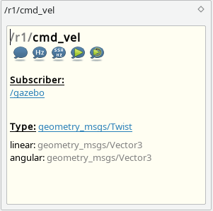

The Topics tab shows all in ROS master registered subscriber and publisher. The count of these is shown in Publisher and Subscriber columns. The type of the ROS topic is also displayed. If a node is selected the corresponding topics will be selected. To get more information to the topic you can use Description Dock.

Topic control buttons:
|
Subscribes the topic and shows his output in a dialog. To reduce the load while printing the messages the length of array and strings is reduced to 80 signs. By default the received messages often as 10 Hz will be skipped. You can increase this values, if needed. 0 disables the limits. There are some other filter settings, which can be changed at runtime.
|
|
Subscribes the topic and shows only Hz of received messages |
| Connects via SSH to remote host and subscribe the topic locally to avoid network load. Shows Hz output of rostopic. | |
| Start publishing a message to selected topic.
|
|
|
Restart publishing a message to selected topic with last parameters.
 |
|
Stops own publishing to selected topic. |


 Only available on local ROS Master. Use
Only available on local ROS Master. Use